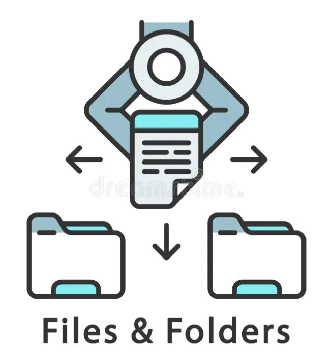
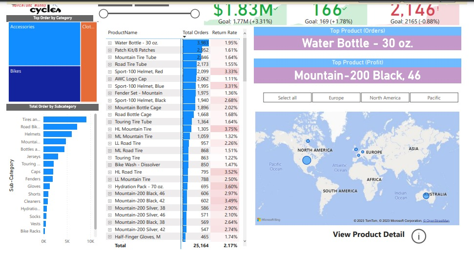
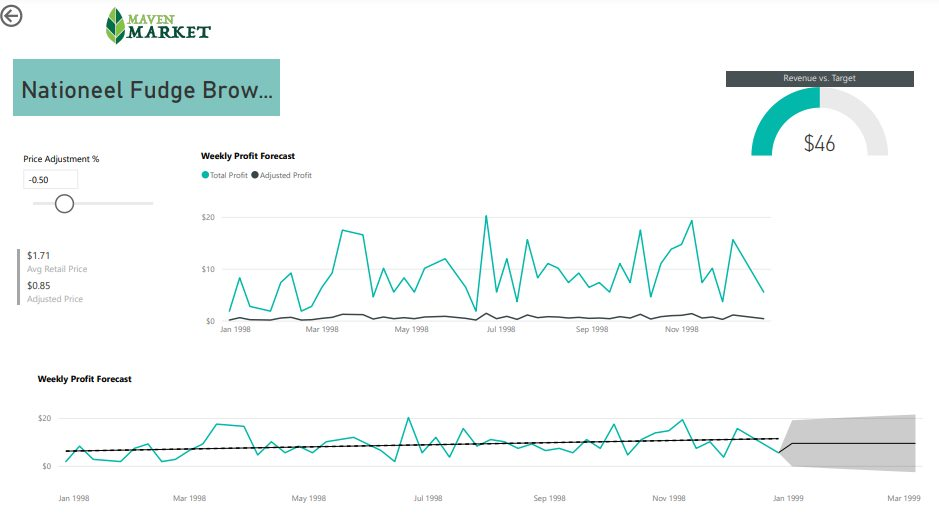
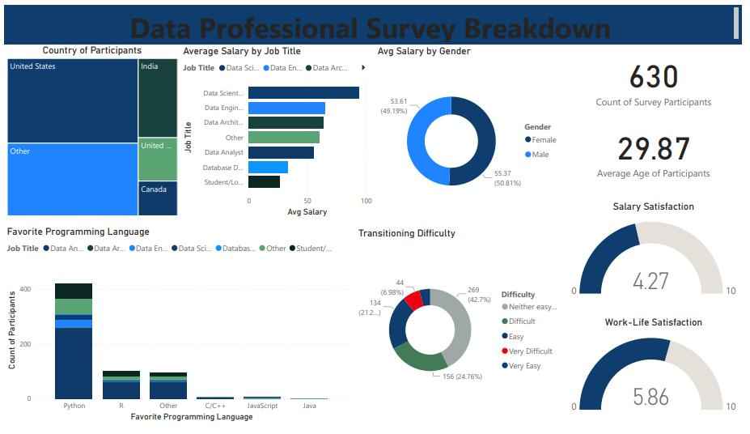

Developed a Python-based automatic file sorter for File Explorer, streamlining file organization and enhancing user efficiency. This project will help us in sorting files according to the file extension

In this project, I explored Covid-19 data with SQL Server and created views for further visualizations

This is curated collection of my Tableau projects, each designed to transform raw data into compelling visual narratives.
In this project, we utilized the BeautifulSoup library in Python to scrape data from Amazon, focusing on analyzing price data for product.

This project seamlessly blends health and technology, showcasing the implementation of a Python-based BMI calculator to help find out if you're a healthy weight for your height.

This project efficiently scraped valuable data from a Wikipedia website and seamlessly transformed it into a structured CSV format. .

This project Leveraged advanced analytics tools to transform raw sales data into actionable insights,
constructing a dynamic Power BI dashboard that propelled strategic decision-making for the store.
Utilized Power BI's robust analytics capabilities to implement comprehensive visualizations, offering real-time visibility into crucial sales metrics, customer trends, and product performance.
The resulting dashboard significantly improved the identification of growth opportunities and facilitated a data-driven approach to inventory management and marketing strategies.

This project Leveraged advanced analytics tools to transform raw sales data into actionable insights,
constructing a dynamic Power BI dashboard that propelled strategic decision-making for the store.
Utilized Power BI's robust analytics capabilities to implement comprehensive visualizations, offering real-time visibility into crucial sales metrics, customer trends, and product performance.
The resulting dashboard significantly improved the identification of growth opportunities and facilitated a data-driven approach to inventory management and marketing strategies.

In this project, I explored Data set of data analyst professionals visualizations